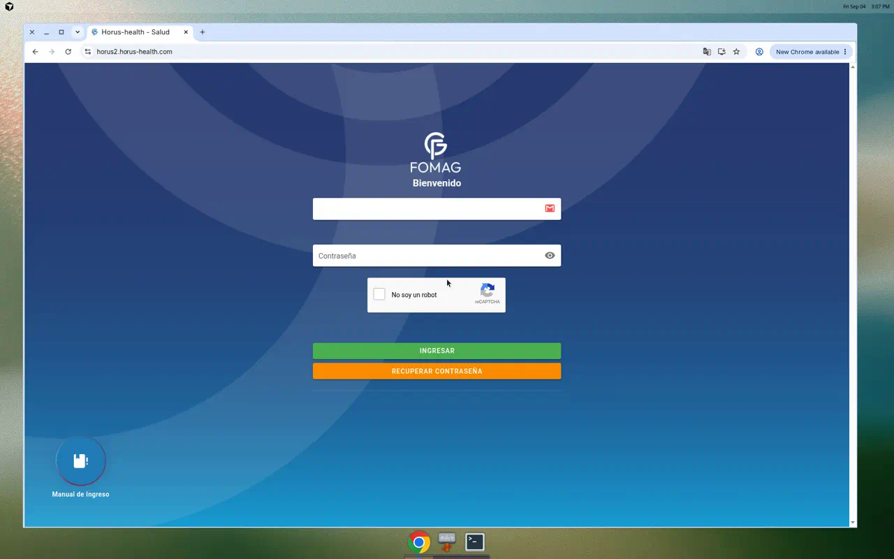

01 Inicio
Punto de entrada del sistema: manuales de usuario y gestión de contenido institucional.
- Manuales
/inicio/manual - Gestión de Contenido
/inicio/gestionContenido
Identificación mediante título de los módulos de la plataforma SUIM-HORUS (Horus 2)
Este documento identifica mediante su título los módulos de la Versión 2.0 del software HORUS HEALTH (también denominado SUIM-HORUS o Horus 2), en atención al numeral 4 de la solicitud de documentación e información inicial dirigida a SUMIMEDICAL S.A.S., que requiere la identificación de cincuenta y cuatro (54) módulos.
El inventario se construyó a partir de la definición de navegación desplegada por la aplicación
de producción en https://horus2.horus-health.com/ (aplicación Nuxt.js / Vue). Esa definición
es el catálogo oficial con el que el sistema dibuja el menú lateral y controla el acceso por permisos.
Complementariamente se revisaron las rutas de la Versión 2.0 para identificar áreas funcionales
con pantallas propias que no aparecen como ítem de primer nivel del menú.
El menú de producción declara 49 entradas de primer nivel, de las cuales dos títulos están repetidos en el propio menú (Gestión Riesgo y Fias). El conteo de títulos únicos de menú es 47. Se adicionan 7 módulos funcionales presentes en el código de la Versión 2.0 con rutas propias, para completar los 54 títulos requeridos.
/inicio/manual) está protegido por reCAPTCHA;
el catálogo no depende de un perfil de usuario concreto: es el menú maestro del producto, que luego
se filtra por permisos. La instancia de producción consultada presenta marca de bienvenida FOMAG
(tenant), pero el menú extraído es el catálogo completo de HORUS HEALTH 2.0, no el recorte de un rol.

| # | Título del módulo | Origen en la Versión 2.0 |
|---|---|---|
| 01 | Inicio | Menú principal de producción |
| 02 | Agendamiento | Menú principal de producción |
| 03 | Citas | Menú principal de producción |
| 04 | Gestión de sucesos | Menú principal de producción |
| 05 | Aseguramiento | Menú principal de producción |
| 06 | Contratos | Menú principal de producción |
| 07 | Farmacia | Menú principal de producción |
| 08 | Panel Médico | Menú principal de producción |
| 09 | Gestión de Red | Menú principal de producción |
| 10 | Transcripciones | Menú principal de producción |
| 11 | SISCAC | Menú principal de producción |
| 12 | Históricos | Menú principal de producción |
| 13 | Prestadores | Menú principal de producción |
| 14 | Caracterización | Menú principal de producción |
| 15 | Gestión Riesgo | Menú principal de producción |
| 16 | Empalme | Menú principal de producción |
| 17 | Audimedf | Menú principal de producción |
| 18 | Mesa ayuda | Menú principal de producción |
| 19 | Oncologia | Menú principal de producción |
| 20 | Centro Regulador | Menú principal de producción |
| 21 | Rips | Menú principal de producción |
| 22 | RIAS | Menú principal de producción |
| 23 | Fias | Menú principal de producción |
| 24 | Cuentas medicas | Menú principal de producción |
| 25 | Acción Constitucional | Menú principal de producción |
| 26 | Telesalud | Menú principal de producción |
| 27 | Salud Ocupacional | Menú principal de producción |
| 28 | Domiciliaria | Menú principal de producción |
| 29 | PQRS | Menú principal de producción |
| 30 | Talento Humano | Menú principal de producción |
| 31 | Solicitudes | Menú principal de producción |
| 32 | Estadísticas | Menú principal de producción |
| 33 | Indicadores | Menú principal de producción |
| 34 | Turno | Menú principal de producción |
| 35 | Autogestión | Menú principal de producción |
| 36 | Libre elección | Menú principal de producción |
| 37 | Sarlaft | Menú principal de producción |
| 38 | Evaluación Médica Ocupacional | Menú principal de producción |
| 39 | SST | Menú principal de producción |
| 40 | Reportes | Menú principal de producción |
| 41 | Reportes - Prestadores | Menú principal de producción |
| 42 | Desarrollo | Menú principal de producción |
| 43 | API | Menú principal de producción |
| 44 | Log Interoperabilidad | Menú principal de producción |
| 45 | Interoperabilidad - Historias Clinicas | Menú principal de producción |
| 46 | Gestion Documental | Menú principal de producción |
| 47 | Admin | Menú principal de producción |
| 48 | Historia Clínica | Área funcional con rutas propias (no figura como ítem de primer nivel del menú) |
| 49 | Consentimiento Informado | Área funcional con rutas propias (no figura como ítem de primer nivel del menú) |
| 50 | Certificados de Aptitud Laboral | Área funcional con rutas propias (no figura como ítem de primer nivel del menú) |
| 51 | Cuadro de Turnos | Área funcional con rutas propias (no figura como ítem de primer nivel del menú) |
| 52 | Gestión del Conocimiento | Área funcional con rutas propias (no figura como ítem de primer nivel del menú) |
| 53 | Medicina Laboral | Área funcional con rutas propias (no figura como ítem de primer nivel del menú) |
| 54 | Códigos SUMI | Área funcional con rutas propias (no figura como ítem de primer nivel del menú) |
Se listan los 204 submódulos asociados a los 47 títulos únicos del menú de producción.
Punto de entrada del sistema: manuales de usuario y gestión de contenido institucional.
/inicio/manual/inicio/gestionContenidoProgramación de agenda médica, histórico de cambios y parametrización de agenda.
/agendamiento/medico/agendamiento/registro/agendamiento/historicoCambios/agendamiento/parametrizacionAgendamiento de citas y su parametrización operativa.
/cita/agendamiento/cita/parametrizacionAnálisis, informe y parametrización de eventos / sucesos asistenciales.
/evento/analisisEvento/evento/informeEvento/evento/parametrizacionVerificación de derechos, portabilidad, gestor de afiliados, barreras de acceso y parametrización del aseguramiento.
/aseguramiento/verificacion/aseguramiento/portabilidad/aseguramiento/gestorAfiliados/aseguramiento/barreraAcceso/aseguramiento/parametrizacionAseguramientoAdministración de contratos, familias, prestadores y servicios (CUPS).
/contrato/contratos/contrato/familia/contrato/prestador/contrato/cupsDispensación, inventario, kardex, bodegas, farmacovigilancia, contratos de medicamentos y reposición.
/farmacia/reposicionInventario/farmacia/dispensacion/historico/medicamentosParciales/farmacia/contratos/farmacia/solicitudesBodegas/farmacia/auditoriaSolicitudes/farmacia/movimientosSolicitudes/farmacia/existencias/farmacia/kardex/farmacia/dispensado/farmacia/codigosLasa/farmacia/inventario/farmacia/Farmacovigilancia/farmacia/bodegaMedicamentos/farmacia/bodegas/codigosSumi/codigoSumi/farmacia/parametrizacionProgramas/farmacia/parametrizacionContratoMedicamentosAtención médica, asistencia educativa, demanda inducida y parametrización del acto médico.
/panelMedico/atencion/panelMedico/asistenciaEducativa/panelMedico/demandaInducida/panelMedico/parametrizacionAutorización de medicamentos, servicios, cirugía, oncología y otros servicios de la red.
/autorizacion/medicamentos/autorizacion/servicios/autorizacion/serviciosCirugia/autorizacion/oncologia/autorizacion/otrosServiciosTranscripción de órdenes externas e internas.
/transcripcion/transcripcion/transcripcion/transcripcionInternaCargue, auditoría y parametrización SISCAC (resolución de calidad / indicadores).
/siscac/cargue/siscac/auditoria/siscac/parametrizacion2Consulta histórica de atenciones, historias clínicas interoperables, órdenes, incapacidades y laboratorios.
/historico/consultas/historico/interoperabilidadHc/historico/repositorio/historico/historico-ordenes/historico/incapacidades/historico/laboratoriosGestión de prestadores, toma de procedimientos y dispensación de medicamentos en red.
/prestadores/prestadores/prestadores/tomaProcedimientos/prestadores/historicoMedicamentosRegistro de caracterización de afiliados, ECIS y marcación masiva.
/Caracterizacion/caracterizacion/Caracterizacion/caracterizacionEcis/rias/marcacionMasivaAfiliadosAsistencia educativa, demanda inducida y administración de demanda inducida en gestión del riesgo.
/gestionRiesgo/asistenciaPrincipal/demandaInducida/demandaInducida/demandaInducida/administracionDemandaInducidaRegistro de empalme de información / continuidad operativa.
/empalme/RegistroEmpalmeAuditoría médica concurrente: ingreso, enfermería, medicina general, seguimiento y alta.
/concurrencia/ingreso/concurrencia/auxiliarEnfermeria/concurrencia/enfermeria/concurrencia/medicinaGeneral/concurrencia/seguimiento/concurrencia/alta/concurrencia/parametrizacionMesa de ayuda institucional: radicación, asignación, solución y parametrización de tickets.
/mesaAyuda/radicarSolicitud/mesaAyuda/misSolicitudes/mesaAyuda/misAsignadas/mesaAyuda/solucionadas/mesaAyuda/parametrizacionGestión oncológica: procedimientos, resultados, prestadores, esquemas y enfermería.
/oncologia/tomaProcedimientos/oncologia/solicitudesPrestadores/oncologia/prestadores/oncologia/esquemas/oncologia/enfermeriaOncologiaReferencia y contrarreferencia: registro, seguimientos, procesado y tarifas vs prestadores.
/referencia/registro/referencia/seguimientos/referencia/procesado/referencia/tarifaVsPrestadores/referencia/logsRIPS: banco de proveedores, radicación JSON (Res. 2275/2023), validación (Res. 3374/2000) y soportes.
/rips/banco/rips/radicacion/rips/validadorRips/rips/TecnicosRadicacion/rips/validacionSoportes/rips/radicados/rips/registroCargues/rips/registroCarguesJsonRutas Integrales de Atención en Salud: rutas, seguimiento y cargues masivos.
/rias/rutasRias/rias/seguimientoRias/rias/carguesMasivosRias/rias/marcacionMasivaAfiliadosDescarga de archivos FIAS.
/fias/descargaFiasAuditoría de cuentas médicas: asignación de facturas, auditoría, informes y reportes a prestadores.
/cuentasMedicas/adminCuentasMedicas/cuentasMedicas/facturasPendientes/cuentasMedicas/reasignarFacturas/cuentasMedicas/auditoria/cuentasMedicas/reporteAuditores/cuentasMedicas/informeCuentasMedicas/cuentasMedicas/informePrestadorGestión de tutelas / acciones constitucionales: asignación, gestión y parametrización.
/tutela/tutelaAsignada/tutela/tutelaGestion/tutela/tutelaParametrizacionCreación, pendientes, juntas de profesionales y cierre de atenciones de telesalud.
/telesalud/parametrizacion/telesalud/crearTelesalud/telesalud/pendientes/telesalud/juntaProfesionales/telesalud/solucionadosHistórico de salud ocupacional.
/saludOcupacional/historicoOcupacionalIngreso y censo de atención domiciliaria.
/domiciliaria/ingresoDomiciliario/domiciliaria/censoDomiciliarioPQRSF: formulario, gestión interna/externa, central de PQRS y parametrización.
/gestionPqrsf/formulario/gestionPqrsf/gestion/gestion/gestionPqrsf/gestionInterna/gestionInterna/gestionPqrsf/gestionExterna/gestionExterna/gestionPqrsf/centralPqrf/centralPqrf/gestionPqrsf/parametrizacionEmpleados, cierre de mes, inducción, incidentes, evaluación de desempeño, beneficios y parametrización.
/talentoHumano/empleados/talentoHumano/cierreMes/talentoHumano/induccionEspecifica/talentoHumano/incidentes/talentoHumano/evaluacionDesempeno/talentoHumano/planSeguimiento/talentoHumano/beneficios/talentoHumano/parametrizacionRadicación, gestión, asignación, administración e informe de solicitudes.
/solicitudes/radicarSolicitud/solicitudes/gestion/solicitudes/asignadas/solicitudes/Admin/solicitudes/informeEstadísticas operativas, parametrización y usuarios en línea.
/estadistica/estadistica/estadistica/parametrizacion/estadistica/usuarios-en-lineaTablero de indicadores de gestión.
/indicador/indicadoresGestión de turnos, tablero, llamado, taquilla y áreas clínicas.
/turno/listar/turno/tablero/turno/llamado/taquilla/taquilla/areaClinica/areaClinicaPortal del afiliado: certificado de afiliación, solicitudes, órdenes, PQRSDF y agendamiento de citas.
/autogestion/certificadoAfiliacion/autogestion/radicarAutogestion/autogestion/ordenesAutogestion/autogestion/pqrsfAutogestion/autogestion/citasAutogestionFormulario de libre elección de IPS.
/autogestion/ips-seleccionadaFormulario y revisión SARLAFT (prevención de lavado de activos y financiación del terrorismo).
/sarlaft/formularioSarlaft/sarlaft/revisionSarlaftSolicitudes EMO, gestión y parametrización de sedes ocupacionales.
/medicinaLaboral/emo/formularioSolicitudes/medicinaLaboral/emo/gestionSolicitudes/medicinaLaboral/emo/parametrizacionSedesOcupacionalesSeguridad y Salud en el Trabajo: FURAT, FUREL, investigaciones, determinación de origen y junta regional.
/furat/registro/furel/registroFurel/Sst/historicos/sst/firmaInvestigaciones/Sst/determinacion-origen/sst/junta-regional-calificacion/furat/reporte/furat/parametrizacion/Sst/parametrizacionAdjuntosGeneración de reportes, mis reportes, parametrización y vademécum.
/reportes/reportes/reportes/mis-reportes/reportes/parametrizacion/farmacia/vademecumReportes específicos para prestadores (formato 202).
/reportesPrestadores/reporte202Catálogo de permisos y estados del sistema (herramientas de desarrollo / configuración avanzada).
/desarrollo/permiso/desarrollo/estadoClientes, rutas, auditoría y configuración de interoperabilidad vía API.
/api/clientes/api/rutas/api/auditoriaInteroperabilidad/api/configuracionInteroperabilidad/api/logsInteroperabilidadesAuditoría, notificación de despacho y manuales de interoperabilidad.
/logInteroperabilidad/auditoriaInteroperabilidad/logInteroperabilidad/notificacionDespacho/logInteroperabilidad/manualesRegistro de clientes e historias clínicas interoperables.
/logInteroperabilidad/registroInteroperabilidades/Interoperabilidad/historiasClinicasInteroperabilidadRepositorio documental / intranet.
/intranet/documentosAdministración general: roles, usuarios, sedes, entidades, auditorías, notificaciones y parametrizaciones.
/admin/auditoria/admin/auditoria-logueos/admin/central-notificaciones/admin/roles/admin/cargos/admin/usuarios/admin/especialidades/admin/entidades/admin/citas/admin/sedes/admin/colegios/admin/tipoTest/admin/consentimientosInformados/admin/parametrizacionCupRips/admin/parametrizacionProgramas/admin/empresas/admin/envioCorreosÁreas con pantallas y rutas propias en HORUS HEALTH 2.0 que no figuran como ítem de primer nivel del menú lateral, y que completan el inventario de 54 títulos.
Parametrización de estructura de historia clínica (categorías, tipos de campo y campos). Rutas /historia/*.
/historia/campoHistoria/historia/categoria/historia/tipoCampoRegistro y consulta de consentimientos informados. Ruta /consentimiento/consentimientoInformado y administración en Admin.
/consentimiento/consentimientoInformado/historico/consentimientosEmisión y gestión de certificados de aptitud laboral. Ruta /certificadosAptitudLaboral/certificadosAptitudLaboral.
/certificadosAptitudLaboral/certificadosAptitudLaboralProgramación mensual de turnos clínicos. Ruta /cuadroTurno/programacionMensual.
/cuadroTurno/programacionMensualSolicitudes de capacitación. Ruta /gestionConocimiento/solicitudCapacitacion.
/gestionConocimiento/solicitudCapacitacionAgenda y atención de medicina laboral, adicional al módulo de Evaluación Médica Ocupacional (EMO). Rutas /medicinaLaboral/*.
/medicinaLaboral/agendar/medicinaLaboral/atencionMedicaCatálogo de productos y parametrización farmacéutica (formas farmacéuticas, grupos terapéuticos, vías de administración). Parcialmente expuesto bajo Farmacia > Productos.
/codigosSumi/codigoSumi/codigosSumi/formasFarmaceuticas/codigosSumi/gruposTerapeuticos/codigosSumi/subgruposTerapeuticos/codigosSumi/viasAdministracion/codigosSumi/lineasBases/codigosSumi/parametrizacionCodesumis